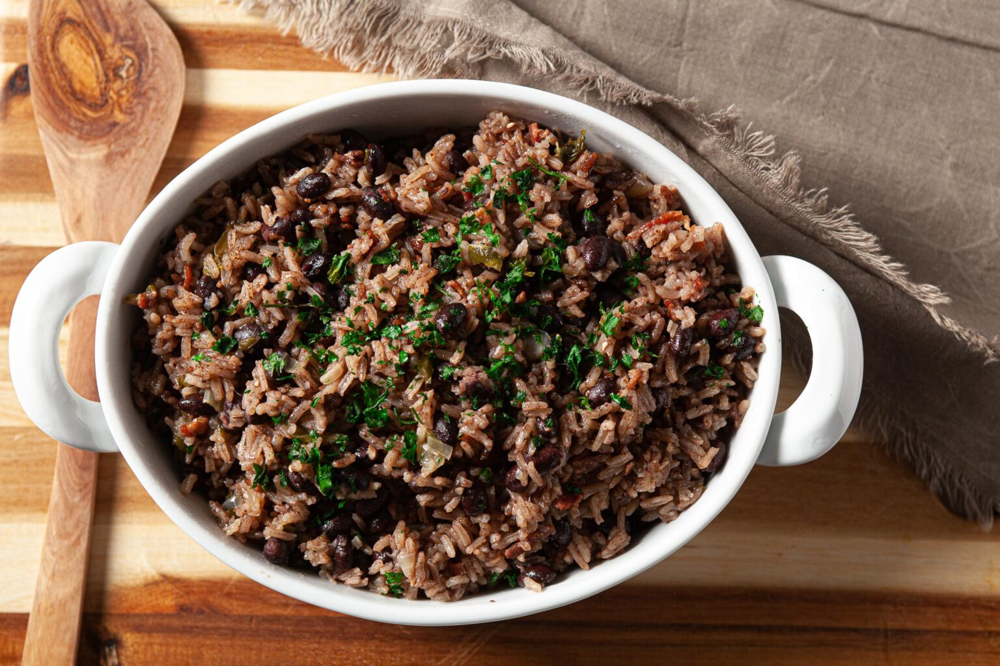

Cuban Beans and Rice
Beans and rice are a delicious staple in many different cultures. Enjoy this delicious and simple take
on beans and rice, Cuban-style.

Ingredients
- 6 slices bacon, chopped
- 1 medium onion, finely chopped, about 1 cup
- 6 cloves garlic, finely minced
- 1 medium green pepper, seeded and finely chopped, about 3/4 cup
- 1 tsp salt
- 2 ½ tsp Better than Bouillon, or chicken bouillon powder
- 2 bay leaves
- ½ tsp ground cumin
- 1 tsp dried oregano
- 1 ½ cups long grain white rice, uncooked
- 2 cans black beans, with liquids, (15.5 oz each can)
- 1 TB red wine vinegar
- 1 ⅔ cups water
- Optional: Cilantro or green onions to garnish
Directions
- Place chopped bacon in a large heavy pan with a tight fitting lid. Stir over medium high heat until bacon is nicely browned, about 6 minutes.
- Add onion, garlic, green pepper, and salt to the pan and stir until onions are translucent, about 5 minutes.
- Add chicken bouillon, bay leaves, cumin, oregano, and rice. Stir for 1 minute until well mixed and all the rice is coated in oil.
- Add the beans with their liquids, red wine vinegar, and water. Mix to combine. Bring to a boil, watching carefully; once it boils, immediately reduce to a simmer. Cover tightly and continue to simmer for 45 minutes. Do not peek.
- Keeping pot covered, let it rest off heat another 10 minutes. Fluff rice with a fork and serve.
- Garnish with chopped cilantro or green onions if desired.
Nutrition Facts
Per Serving
Serving: 1g | Calories: 249kcal | Carbohydrates: 32.6g | Protein: 7.3g | Fat: 9.9g | Saturated Fat: 2.7g | Cholesterol: 11.1mg | Sodium: 299.9mg | Fiber: 4.2g | Sugar: 1.4g